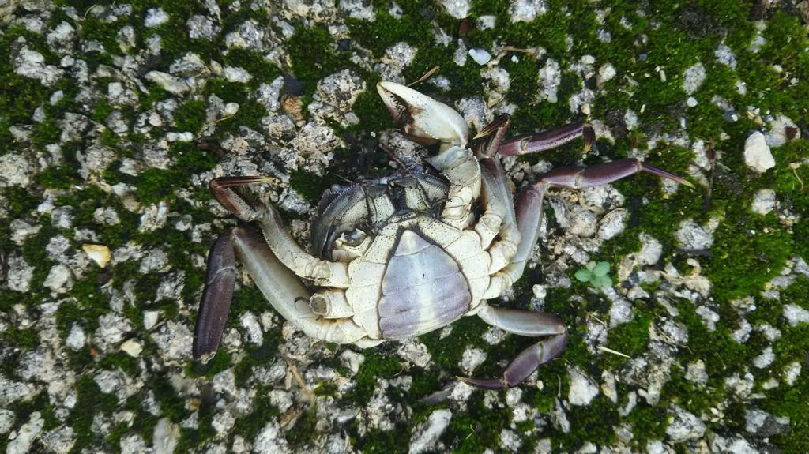
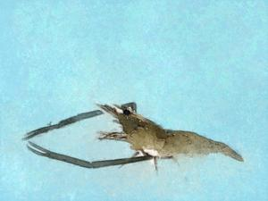
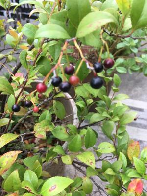
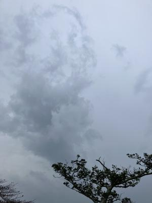
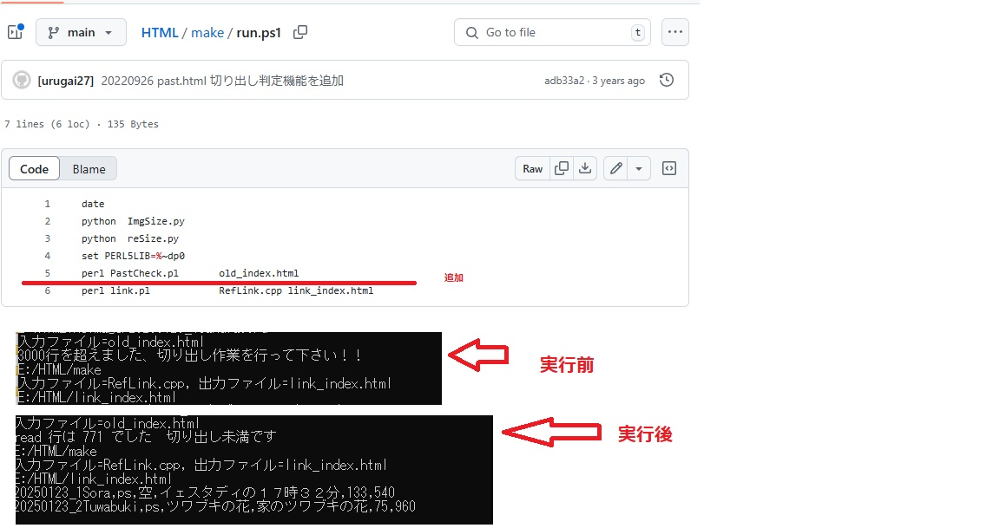
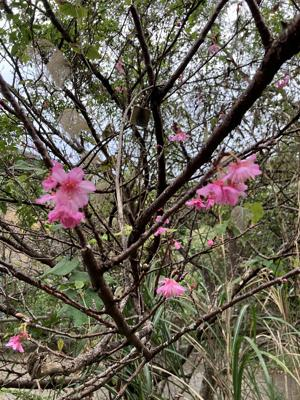
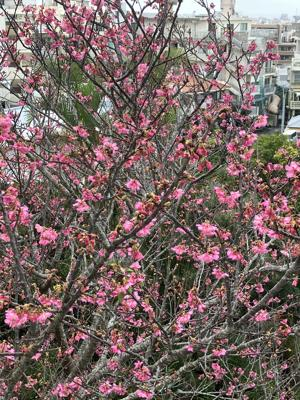

うるがいの話 ある日
最新: Ｇｉｔの履歴【うるがいの話 ある日】とは 一日だけのプログです
『うるがいの話』の最新一日だけのプログで、通信料が少なく経済的だ。カニの画像をクリックすると全ての日付が載る『うるがいの話』サイトを表示します
|  |
【うるがいの話】 うるがい(ｳﾙｶﾞｲ urugai)とは、『もずくがに』の名前でとても大きくなります。 |
|---|---|
|
【カミマヤーの話】 猫のことを方言でマヤーといいます。カミマヤー（kamimayaa）とは、神の猫のことです。 |
 |
【たながぁの音楽】 たながぁ（ﾀﾅｶﾞｰ tanagaa）とは手長えびのことで、何種類かあり大きいのは車 エビぐらいになります。 |

|
【ぶながぁの話】 ぶながぁ(ﾌﾞﾅｶﾞｰ bunagaa)とは、赤い髪の毛、赤い身体、そして身長は１ｍ２０ｃｍ ぐらい、川の蟹を食べているの目撃された。場所は沖縄県国頭郡大宜味村のと ある村僕の隣近所に住んでいる爺さんから、聞いた話です。 |
|  |
【ギーマの話】 ギーマ(giima)とは、山原の里山に咲くスズランに似た、 花を付けます。実は食べられます、 気が付くと口の周りが紫になっています。 |
2025年01月24日 (金）Ｇｉｔの履歴
16:29

Ｇｉｔとはソースコードや変更履歴を管理するために使われる、代
表的な分散型バージョン管理システムです。
スマホで『うるがいの話』を検索したとき、画像が展開されるのに
時間がかかっている。もしや、ページのサイズが３千行を超えたの
では・・・、超えていた。３千行を超えたら切り出しするよう、仕
掛けたのに！。パソコンＰＣ３に、仕組みが反映されていない。
フムフム、さて、どうゆう仕掛けだったんだろう？、覚えていない
おっと、そのために仕掛けを設けたときや、変更したときは改造履
歴をＧｉｔにしているんだった。と、プラウザから履歴を確認する
。

【２０２２年９月２６日に切り出し判定機能の追加】が履歴にあっ
た。なるほど、とその履歴を参考にＰＣ３に反映させ、無事にペー
ジが軽くなる。（わかる人しか、分からないだろうな）
今日は暑い日、車ではクラーをつけた。桜もぼちぼち、めだち始め
た。
金城ダムの桜

家の桜
